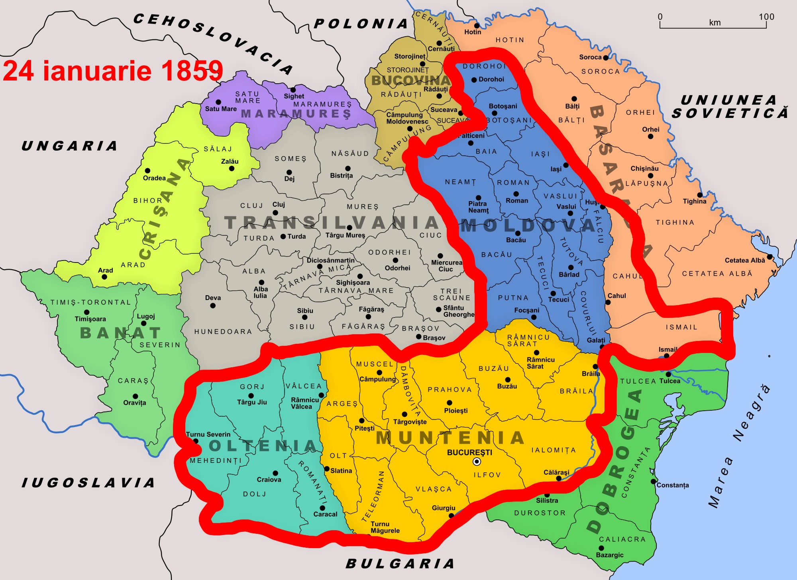

Consecințele înfrângerii de la Turtucaia au fost imense, influențând decisiv cursul campaniei anului 1916. Pentru bulgari recucerirea orașului „răpit” în 1913 a dus la o creștere a moralului național și a dorinței de a continua să lupte alături de Puterile Centrale. Ea a reprezentat o „gură de oxigen” și o încurajare pentru liderii austro-germani care se confruntau cu o serioasă criză și căutau încă soluții pentru a contracara ofensiva românească în Transilvania. În România, căderea Turtucaiei a creat o panică generalizată în rândul populației care nu se mai gândea la speranțele pentru România Mare ci se temea pentru soarta României Mici. Dar cea mai importantă consecință a fost decizia autorităților române de a opri ofensiva în Transilvania și a abandona planul de campanie inițial, fapt care avea să ducă la o serie de înfrângeri și în cele din urmă la pierderea a două treimi din teritoriul național.
Dupa Primul Razboi Mondial,Romania a fost de partea Antantei,adica a castigat razboiul.
Romania a participat la “Pacea de la Versailles”.
Prin castigarea bataliilor de la Marasesti,Marasti si Oituz,Romania a “castigat” Transilvania.
Prin “Pacea de la Versailles” Romaniei, i s-au recunoscut urmatoarele teritorii: Banat, Crisana, Maramures, Transilvania, Bucovina, Basarabia si Dobrogea
